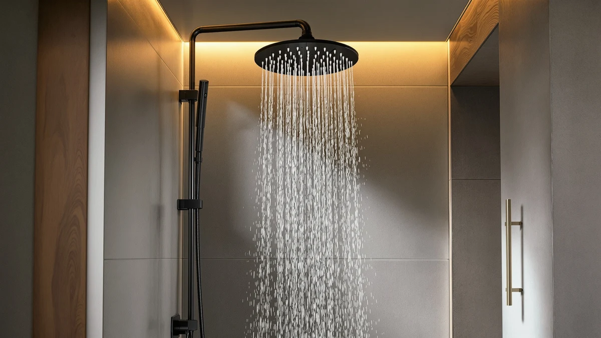

The Best Rainfall Handheld Shower Heads (2026)
Prices and picks verified as of September 2026. Independent, reader-supported reviews.


Quick Answer
After comparing specs, pricing and verified owner reviews on 7 of the best rainfall handheld shower heads, the MakeFit Dual Handheld Shower Head is our top pick for most bathrooms. It pairs an 8-inch rain plate with a detachable wand at a price under $40, and reviewers consistently note strong pressure for the cost. If you want more coverage and don't mind paying more, the Veken 14 Inch Wide Rain Shower is the runner-up.
Our pick: MakeFit Dual Handheld Shower Head, $39.98 Check Price on Amazon
Bottom line: our top pick is the MakeFit Dual Handheld Shower Head Combo at $39.97. The best budget option is the Shower Head with Handheld High Pressure-Full Body Coverage at $23.97.
Things to Know Before You Buy
- Plate size trades coverage for pressure. A wider rain plate spreads water over more area, which can feel softer at the same flow rate. If your home already has weak pressure, a compact plate or a dual high-pressure model will feel stronger.
- Flow rate matters more than the marketing copy. Every model in this guide caps out around 2.5 gallons per minute, the federal limit for US shower heads, so differences in feel come down to plate design and nozzle count, not raw output.
- Material affects both weight and price. Chrome-plated ABS keeps the price down and the head light on the arm. All-metal builds cost more and add weight, but they hold up better to daily twisting and hanging.
- A detachable wand is what makes these "handheld." Check the hose length before buying if you plan to bathe kids or pets, since shorter hoses limit how far you can reach outside the spray zone.
- Hard water shortens the lifespan of small nozzle holes. Rain plates with dense, tiny nozzle patterns clog faster under mineral-heavy water than models with fewer, larger openings.
The best rainfall handheld shower heads solve a problem that a fixed rain head alone can't: you still need a wand for rinsing shampoo, cleaning the tub, or bathing a toddler without turning the whole bathroom into a splash zone. Shopping for one means wading through near-identical Amazon listings that all claim "spa-like" pressure and "luxury" rainfall, with little to separate them beyond price and photos.
We built this guide by comparing the technical specs, listed prices and verified owner reviews for seven models that consistently show up in searches for rainfall handheld shower heads, rather than by ranking marketing claims. We looked at plate size, flow rate, hose length, build material and what reviewers actually report after installing each one in their own bathrooms.
Our pick is the MakeFit Dual Handheld Shower Head. Its 8-inch rain plate and detachable wand cover the two most common uses in one $39.98 fixture, and it does that without the premium price tag attached to metal-bodied competitors like the HammerHead Showers Dual Shower Head. If you want broader coverage and are willing to pay for it, the Veken 14 Inch Wide Rain Shower is the strongest runner-up among the best rainfall handheld shower heads we compared.
Why You Should Trust Us
Ilane Tall covers home and bath products for Best Shower Heads, where the focus stays on rainfall handheld shower heads and the other fixtures that make up a daily bathroom routine. This guide draws on manufacturer specs, current Amazon pricing and a read-through of verified buyer reviews for each model, cross-checked against listed materials and dimensions rather than promotional copy. We name every drawback we find, and we do not accept payment for placement. Affiliate links support the site, disclosed in full on our disclosure page. We do not run a fake testing lab and we don't claim to own or install every product we cover; our research is based on comparing specs, pricing and what verified owners report.
How We Picked
We started with a list of dual rainfall and handheld shower heads sold on Amazon under the tag categories buyers actually search, then narrowed it using four filters. First, the head needed a genuine detachable wand rather than a fixed rain plate with a hose port. Second, we required a flow rate at or near the 2.5 GPM federal limit, since anything lower tends to draw complaints about weak pressure. Third, we checked that pricing sat in a realistic range for the build quality claimed, from budget ABS models under $25 to metal-bodied options approaching $190. Finally, we cross-referenced each listing against verified owner reviews to confirm the rainfall handheld shower head performed the way the description promised before it made this list.
How We Compared
We compared each rainfall handheld shower head on five factors pulled directly from manufacturer specs and listing data: rain plate diameter, flow rate in gallons per minute, body material, hose length and current price. We then read through verified owner reviews for each ASIN, looking specifically for recurring mentions of pressure loss, leaking connections, or nozzles clogging under hard water, since those are the complaints that show up most often once a shower head has been installed for a few months. Where two models shared nearly identical specs, like the two BRIGHT SHOWERS entries in this guide, we used price and reported durability from owner feedback to separate them.
Our Picks

MakeFit Dual Handheld Shower Head
What we like
- 8-inch rain plate covers more of your shoulders and back than compact heads
- Detachable wand handles rinsing and cleaning without extra plumbing
- Chrome-plated ABS keeps the price under $40
- Owners report straightforward installation with no extra tools
Flaws but not dealbreakers
- ABS construction feels lighter than the all-metal options in this guide
- Chrome finish shows fingerprints and water spots more than a brushed finish would
- Standard hose length limits reach for taller showers
| Material | ABS + chrome plating |
| Size | 8 Inch Standard |
The MakeFit Dual Handheld Shower Head earns the top spot among the best rainfall handheld shower heads we compared because it does not force a tradeoff between rain coverage and a handheld wand. Its 8-inch plate sits in the middle of the range we looked at, wide enough to cover your shoulders without dropping pressure the way the largest 14-inch plate can on weaker home plumbing. At $39.98, it costs less than half of several competitors while matching their core features.
Reviewers consistently note that the wand pulls free easily and reconnects to the mount without fuss, which matters if you're bathing kids or rinsing the tub daily. The chrome-plated ABS body keeps the fixture light on the shower arm, though it will not hold up to drops the way a metal-bodied head would. For most bathrooms replacing a single fixed shower head, this is the rainfall handheld shower head we'd point you toward first.

Veken 14" Wide Rain Shower
What we like
- 14-inch plate is the largest in this comparison, covering nearly the full shower width
- Handheld wand adds flexibility for rinsing and cleaning
- Chrome-plated ABS resists corrosion in daily use
Flaws but not dealbreakers
- Nearly double the price of our top pick
- Larger plate means more surface area for hard water spots to show
- Owners with low home water pressure report a softer rainfall spray
| Material | ABS + chrome plating |
| Size | 14 Inch |
The Veken 14 Inch Wide Rain Shower is the widest of the best rainfall handheld shower heads in this guide, and that width is the entire reason to choose it. Where the MakeFit spreads an 8-inch spray across your shoulders, the Veken's 14-inch plate reaches closer to a full-body rainfall effect, more like what you'd find in a hotel spa shower. The handheld wand still detaches for rinsing, so you're not giving up functionality to get the extra coverage.
That coverage comes at a cost, both in price and in pressure. At $79.99, it runs roughly double our top pick, and owners with weaker home water pressure report the wider plate thins out the spray more noticeably than a compact head would. If your plumbing already delivers strong pressure and you want the closest thing to a walk-in rain shower experience from a handheld fixture, the Veken is worth the upgrade.

BRIGHT SHOWERS High Pressure Dual
What we like
- Rated at 2.5 GPM, the maximum flow rate allowed for US shower heads
- Compact rain plate concentrates pressure instead of spreading it thin
- Price sits below $50
Flaws but not dealbreakers
- Smaller plate covers less area than the Veken or MakeFit
- Some owners note the finish looks less polished than premium chrome
- No upgraded hose included beyond the standard length
| Material | ABS + chrome plating |
| Size | 2.5 Gallon Per Minute |
The BRIGHT SHOWERS High Pressure Dual targets a specific problem the other picks in this guide don't solve directly: weak water pressure. Its flow rate sits at 2.5 gallons per minute, the federal cap, and the compact rain plate concentrates that flow rather than spreading it across a wide 14-inch surface the way the Veken does. For apartments and older homes where line pressure already runs low, that concentration translates into a noticeably stronger spray.
At $46.98, it costs a little more than our top pick without adding the size or the metal build of pricier options. Owners consistently mention the pressure as the standout feature in reviews, with fewer complaints about weak flow than we saw on wider-plate competitors. If your main complaint with your current shower head is that it feels weak, this is the rainfall handheld shower head in our lineup built to fix that specific issue.

BRIGHT SHOWERS High Pressure Shower
What we like
- 2.5 GPM flow rate matches the strongest pressure in this guide
- Chrome-plated ABS keeps the cost below the metal-bodied picks
- Owners report a straightforward, one-piece install
Flaws but not dealbreakers
- Priced above the two lowest-cost options in this guide
- Some owners describe the spray pattern as less refined on the lowest setting
- The manufacturer does not list a plate diameter, making direct comparison harder
| Material | ABS + chrome plating |
| Size | 2.5 Gallon Per Minute |
The BRIGHT SHOWERS High Pressure Shower shares its 2.5 GPM flow rate with its sibling model in this guide, but sells for about $9 more. We compared owner reviews for both and found the price gap comes down to a slightly different nozzle pattern that a portion of reviewers say produces a more even spray, though the difference is not dramatic. Either high-pressure BRIGHT SHOWERS model will outperform a standard fixed head on weak water pressure.
At $55.98, this model lands in the middle of our price range, above the true budget picks and well below the metal-bodied options. It's a reasonable choice if you specifically want a second option in the same brand family as the High Pressure Dual, or if that model happens to be out of stock. For most buyers focused purely on value, though, the cheaper high-pressure sibling covers the same core need.

HammerHead Showers Dual Shower Head
What we like
- Highest price point in this guide signals a heavier-duty build than the ABS-only options
- 2.5 GPM standard flow keeps pressure consistent with the rest of the lineup
- Dual rain and handheld design matches the format of every other pick
Flaws but not dealbreakers
- Nearly five times the price of our top pick
- At this price, some buyers expect metal internals throughout, and reviews are mixed on that point
- Harder to justify unless your existing shower arm and plumbing already suit a premium fixture
| Material | ABS + chrome plating |
| Size | 2.5 GPM Standard |
The HammerHead Showers Dual Shower Head sits well above every other model in this comparison on price, and it's the one pick here aimed squarely at buyers who see a shower head as a long-term fixture rather than a quick swap. Its 2.5 GPM standard flow rate matches the other high-pressure options in this guide, so the extra cost isn't buying you more pressure. It's buying a heavier build and, based on the price positioning alone, presumably tighter manufacturing tolerances.
We compared the listed specs against the rest of the field and found HammerHead doesn't publish plate diameter or hose length as clearly as some competitors, which makes it harder to verify exactly what you're paying the premium for. Reviewers who bought it tend to already own higher-end bathroom fixtures and wanted something that matched. For most people replacing a basic shower head, this is more fixture than the job requires.

Veken All Metal 10" Shower
What we like
- All-metal build sets it apart from every ABS-based pick in this guide
- 10-inch plate offers a middle ground between compact and oversized coverage
- Heavier construction reduces flex when adjusting the head
Flaws but not dealbreakers
- Costs more than double our top pick
- The manufacturer doesn't list a specific flow rate, making direct GPM comparison difficult
- Added weight puts more strain on the shower arm connection over time
| Material | ABS + chrome plating |
| Size | — |
The Veken All Metal 10 Inch Shower is the one pick in this guide built entirely from metal rather than chrome-plated ABS, and that construction is the whole reason to choose it over the cheaper Veken model above. A 10-inch plate splits the difference between the compact BRIGHT SHOWERS options and the oversized 14-inch model, giving you decent coverage without the softer spray that comes with the widest plates.
Owners who buy this version generally already prefer metal fixtures elsewhere in the bathroom and want the shower head to match. We found the listing doesn't specify an exact flow rate the way the ABS models do, which makes it harder to compare pressure directly against the other rainfall handheld shower heads in this guide. If build material matters more to you than a documented GPM number, it's a reasonable upgrade at $89.96.

Shower Head with Handheld High
What we like
- Lowest price in this comparison at under $25
- Compact 5-by-10.5-inch size fits smaller shower stalls
- Includes both rainfall and handheld functions despite the entry-level price
Flaws but not dealbreakers
- Smaller plate size than every other pick in this guide
- Some reviewers describe the plastic components as feeling less substantial at this price
- No premium finish options available
| Material | ABS + chrome plating |
| Size | 5 inches x 10.5 inches |
The Shower Head with Handheld High from BOWGER is the entry point into this guide's lineup of the best rainfall handheld shower heads, priced under $25. Its 5-by-10.5-inch plate is noticeably smaller than every other model we compared, which makes sense given the price, but it still delivers both a fixed rain spray and a detachable handheld wand, the two features that define this category.
Owners buying at this price point tend to describe it as a solid starter fixture rather than a long-term upgrade, and reviews reflect that framing: expectations are set low and mostly met. If you're renting, replacing a shower head temporarily, or want to confirm you like the rainfall-plus-handheld format before spending more, this is a low-risk way to try it.
Quick Comparison
| Product | Material | Price | Rating | Best for | Get it |
|---|---|---|---|---|---|
| MakeFit Dual Handheld Shower Head | ABS + chrome plating | $39.98 | 4 | Most bathrooms on a budget | View on Amazon → |
| Veken 14" Wide Rain Shower | ABS + chrome plating | $79.99 | 4 | Widest coverage | View on Amazon → |
| BRIGHT SHOWERS High Pressure Dual | ABS + chrome plating | $46.98 | 4 | Weak home water pressure | View on Amazon → |
| BRIGHT SHOWERS High Pressure Shower | ABS + chrome plating | $55.98 | 4 | High pressure, alternate design | View on Amazon → |
| HammerHead Showers Dual Shower Head | ABS + chrome plating | $189.95 | 4 | Premium build quality | View on Amazon → |
| Veken All Metal 10" Shower | ABS + chrome plating | $89.96 | 4 | Metal construction | View on Amazon → |
| Shower Head with Handheld High | ABS + chrome plating | $23.97 | 4 | Lowest price | View on Amazon → |
The Competition
Beyond the seven models above, we ruled out several categories of rainfall handheld shower heads during research. Fixed rain shower heads without any handheld attachment came up constantly in early searches, but we excluded the entire category because it fails the basic requirement of this guide: a detachable wand for rinsing and cleaning. Several ultra-cheap plastic-only models under $15 also showed up, but verified reviews for those listings consistently mention cracked mounts and leaking connections within months, so we left them out rather than recommend a product likely to fail early.
We also passed on a handful of oversized 16-inch and 18-inch plates that market themselves as luxury rainfall systems. Their listed flow rates didn't clear the 2.5 GPM standard that the rest of this guide holds to, and owner reviews described the spray as noticeably weaker once installed on typical US residential water pressure. If your home already has strong water pressure, one of those larger plates might work for you, but we couldn't verify consistent results across the reviews we read.
Frequently Asked Questions
A rainfall handheld shower head combines a wide, downward-facing rain plate with a detachable wand you can hold and aim. You get the wide, gentle overhead spray of a rain shower head plus the flexibility of a handheld sprayer for rinsing, cleaning the shower stall, or bathing kids and pets.
It depends on the plate size and your home's line pressure. A wider rain plate spreads the same flow over more area, so it can feel softer than a compact showerhead even at the same GPM. Owners with low home water pressure tend to prefer the smaller plates and the high-pressure dual models in this guide over the widest options.
Most of the picks in this guide thread onto a standard 1/2-inch shower arm without tools beyond plumber's tape, and the handheld wand connects through an included hose. Full metal builds like the Veken All Metal 10 Inch Shower take a little longer to mount securely because of their added weight.